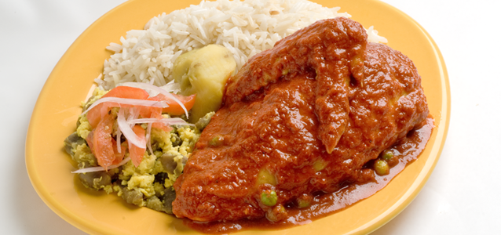
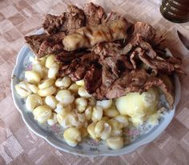
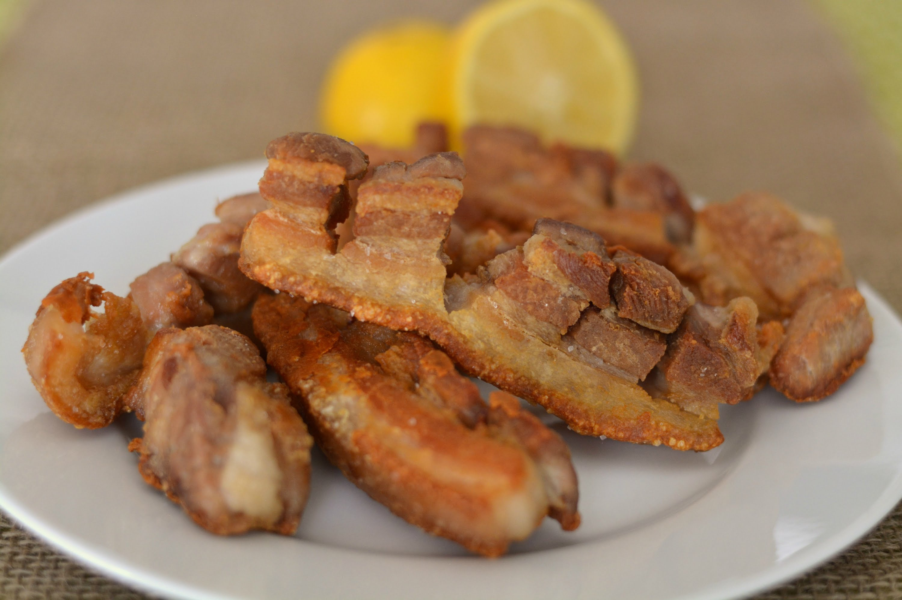

Las recetas no funcionan al menos que utilices tu corazón
Dylan Jones
Nosotros usamos cinco pasos para preparar nuestros platos:
- Compramos carne fresca de Doña Maria.
- Recogemos hortalizas de nuestra huerta privada.
- Desinfectamos todas las verduras
Pero los dos pasos más importantes son:
- Cocinamos todos los productos con la receta de nuestra abuela.
- Utilizamos nuestro horno especial de leña.
Además de tener una amplia experiencia, somos los únicos que traemos ají de la India
OFRECEMOS NUESTROS TRES DELICIOSOS PLATOS:

Picante de Pollo
Picante de Pollo
El picante de pollo es un plato típico de Zudañez.

Sullcka
Sullcka
Hecha con:

Chicharron
Chicharron
El chicharron más crocante de la ciudad.
Hecho con cerdo criollo